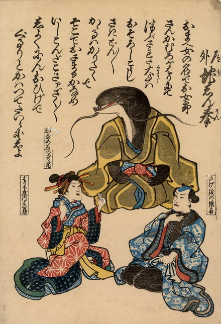

地震；ジシン，鯰；ナマズ，大工；ダイク，花魁；オイラン

鯰・大工・花魁の三者が狐拳に興じている。鯰は「かなめ石のゆり蔵」とあり、正座して黄土色の着物を身につけている。
出典：親書誌：U426_nichibunken_0218：道外地しん拳；ドウゲジシンケン／日付：2010／資源識別子：U426_nichibunken_0218_0001_0000
Copyright (c)2010- International Research Center for Japanese Studies, Kyoto, Japan. All rights reserved.